| April Adventures |
|
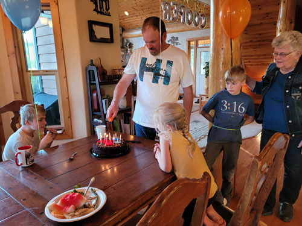 |
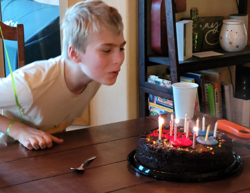 |
| Cooper's 13th birthday party! | He got all the candles. |
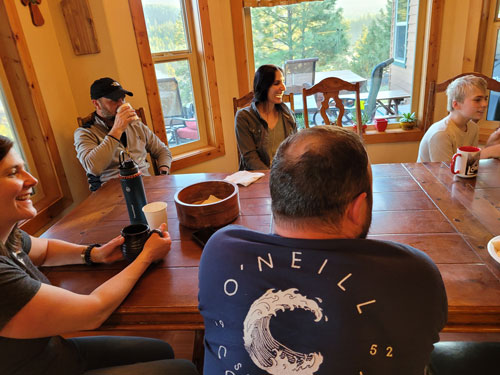 Friends looking on. |
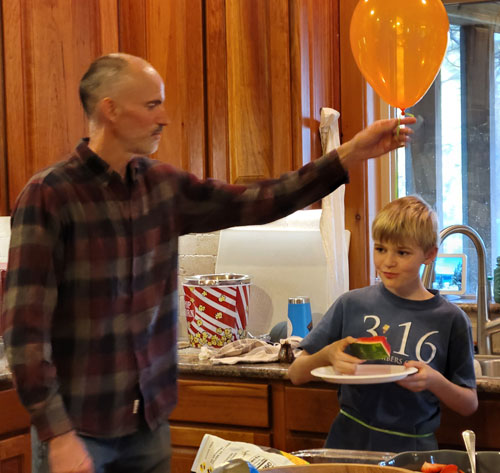 |
| Eric pestering Carter while he's trying to eat. | |
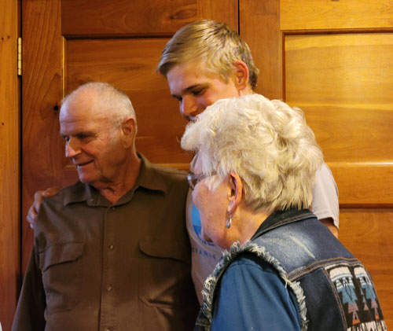 I missed this great shot of Braden hugging his grandparents. |
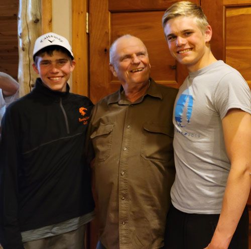 |
| Erik and Braden have grown a bit since the last time we took a
picture like this. They were about 6 years old the last time I remember it! |
|
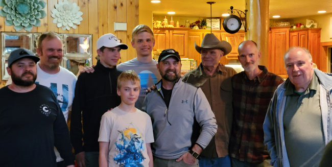 Todd Brouillette, Lucas, Erik, Cooper, Braden, Wayne Olin, Grandpa Dan,
Eric, and Uncle Timmy |
|
| 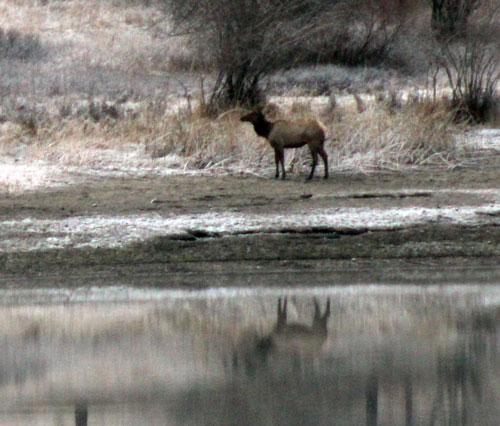 One morning we woke up early to find a group of elk (didn't seem like
enough to call a herd) |
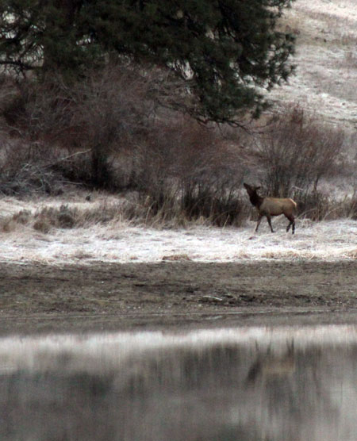 |
| I like how you can see them again in the water's reflection. | |
|
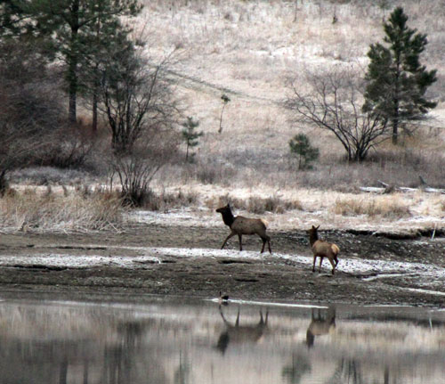 |
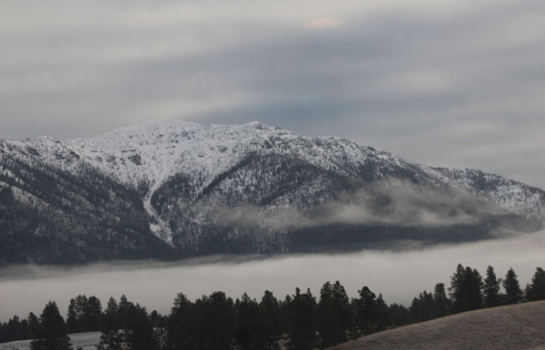 Pulling back a second to look at the misty mountains. |
|
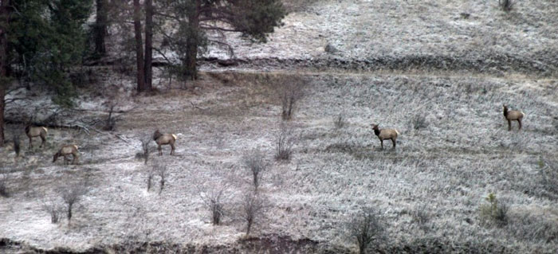 Here I got quite a few of them in one shot. |
|
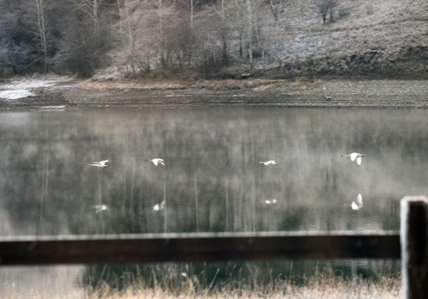 |
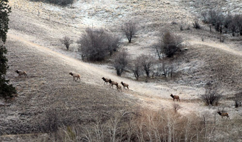 Heading up and out. |
| In the midst of the elk watching, these swans decided to land on
the lake. It was a good time to have my camera out! |
|
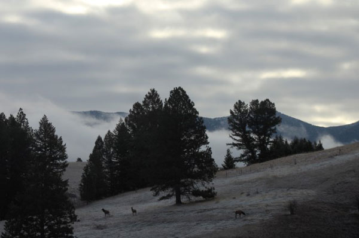 One final shot of them before they head out of sight toward Jeb's house. |
|
|
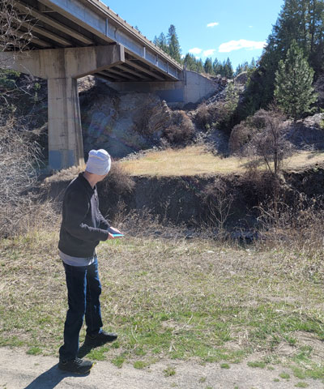 |
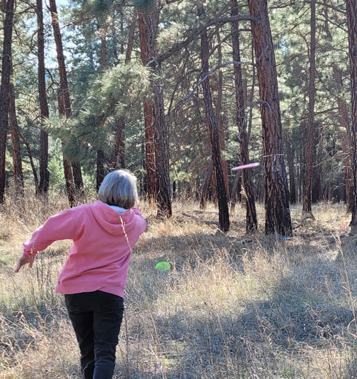 |
| My disc-golf buddies were moving away so we had a farewell game to see them off. | Action shot with Susanna tossing a great shot, as per usual. |
| 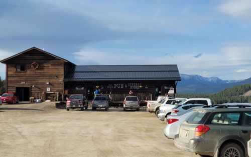 April 9th was our 27th anniversary so I wanted to celebrate by going to Trego Pub to hear Michelle Rivers play. We told everyone we knew and were thrilled by how many of our friends and family showed up to celebrate with us. It was a great time! |
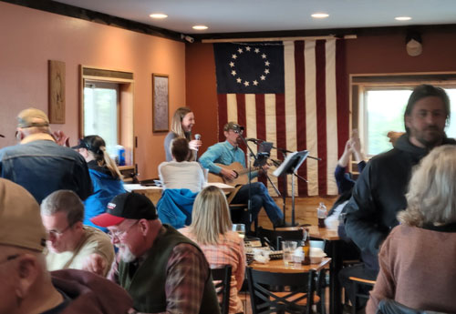 Michelle and her Dad playing in the newly expanded eating area at Trego Pub. |
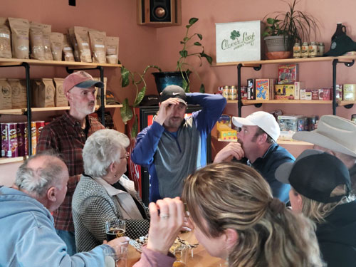 |
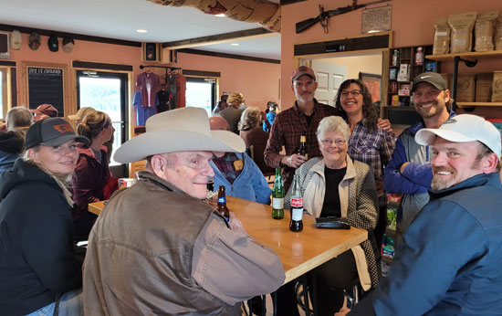 Group shot to commemorate the gathering. Rob & Kip Good and Jeff Peterson/Amy Driggs also attended. |
| Casazza family action shot. Left to right: Uncle Tim, Eric, Rose, Jeb, Amy, Lucas, Kristi, Dan Sr. | |
|
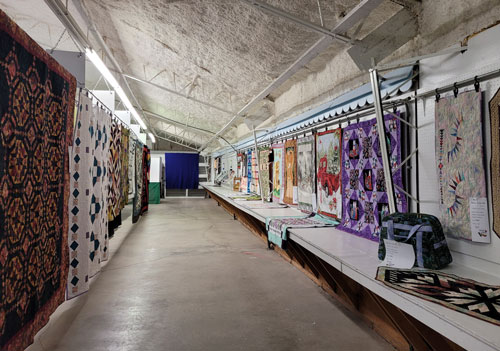 Rendezvous Days 2021! I've always wanted to attend a Rendezvous
Days celebration, My local quilt guild puts on a quilt show. I spent most of the
weekend working at the |
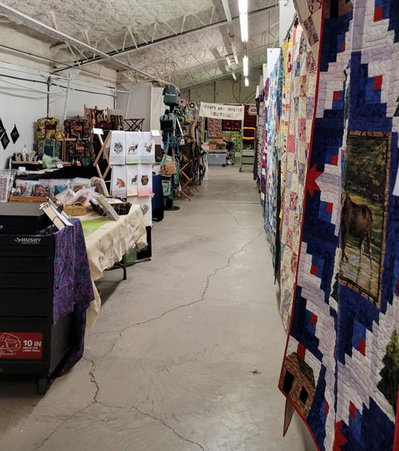 |
| This is the vendor side of the quilt show with several vendors and our boutique. | |
|
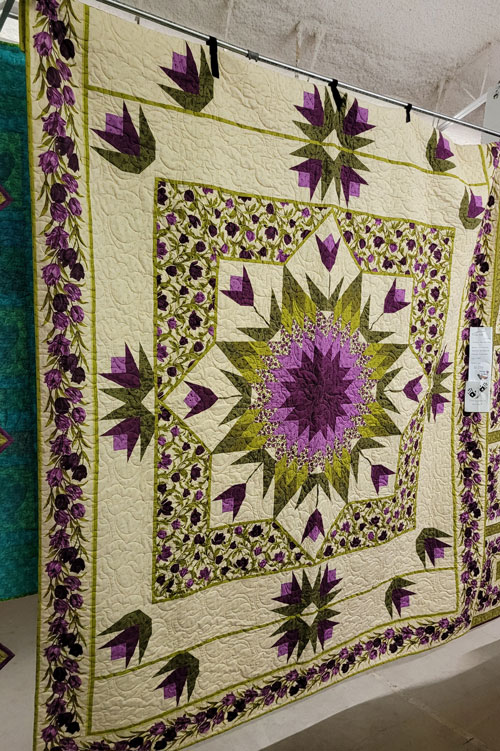 |
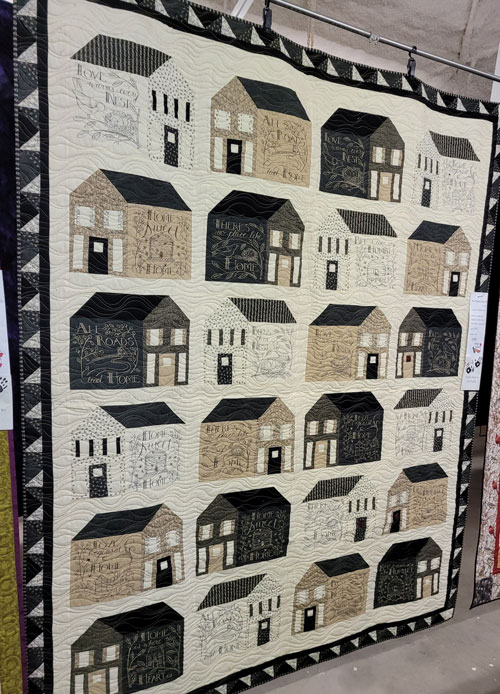 |
| One of my favorite quilts at the show, made by Sheri Butowski | Another very clever quilt, made by my friend Melody Casey.
The sides of each house are a panel with a saying on it. |
|
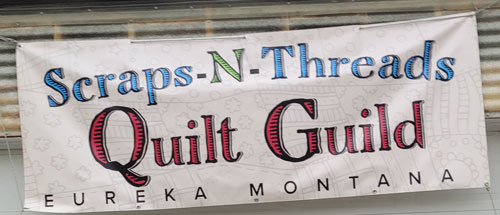 Our newly made guild banner, produced by our good friend Rob Good. |
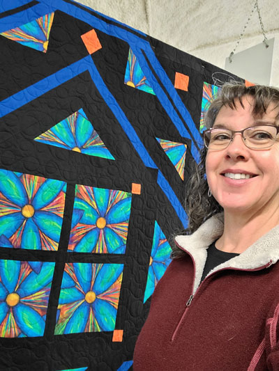 Here's a string of selfies I took with my quilts in the show. |
|
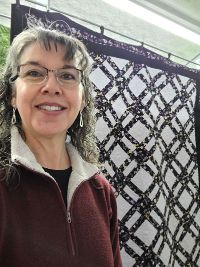 |
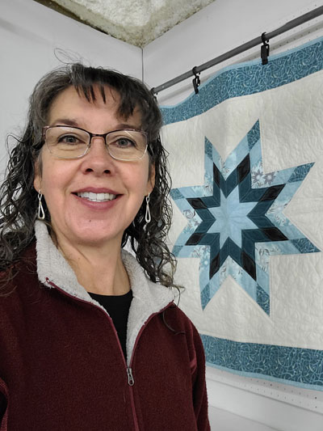 |
| I had almost decided to keep this quilt, but a very nice
man bought it as an anniversary gift for his wife. I'm glad it went to a good home! |
Our whole quilt guild made these "Starbaby" quilts
together as a group and then displayed them in a special exhibit. |
|
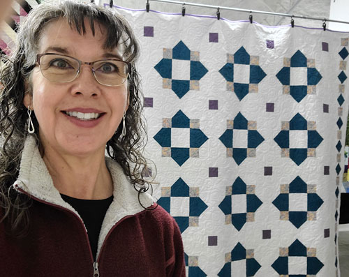 Man, I'm bad at selfies! |
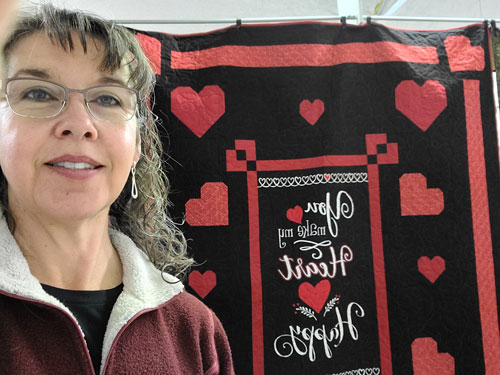 A selfie doesn't work at all for a quilt with words on it! The
panel said, "You Make My |
|
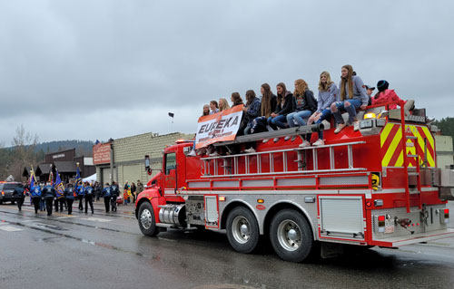 |
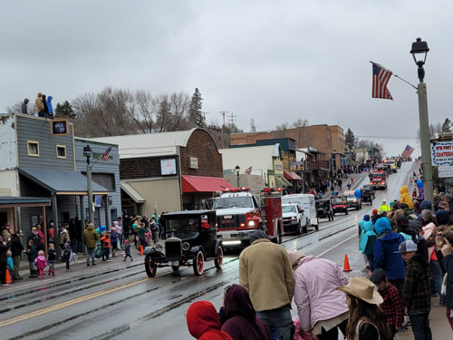 |
| Next I attended the parade. | It was the longest parade I've ever attended! |
|
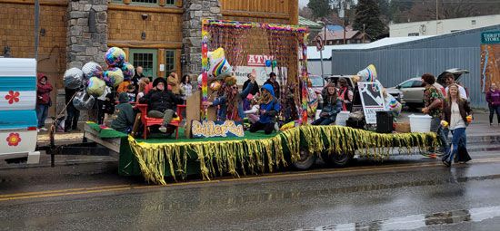 The Lancaster & Co float was really well done, in 70's style. |
|
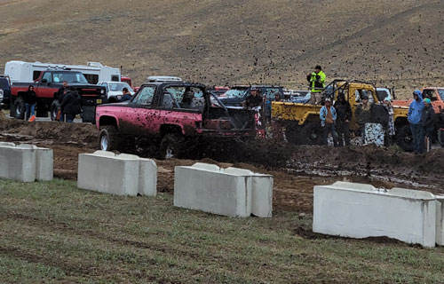 |
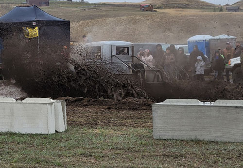 |
| Next I attended my first mud bog. | It's a sport where getting a front-row seat is not a good thing! |
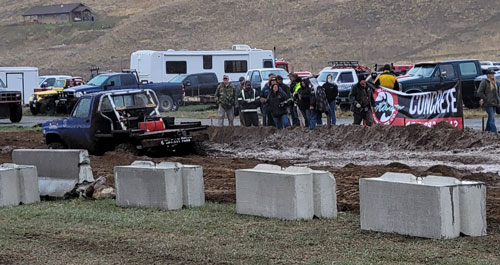 Everyone was making it look easy until finally people started to get stuck. Also in this shot is a huge banner from Lucas' concrete business, also
made |
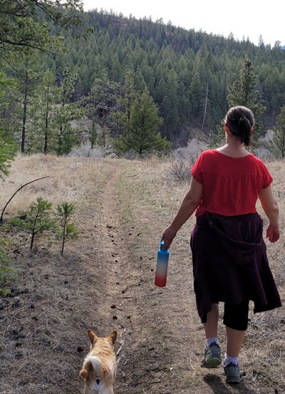 |
| On a walk with Amy Driggs, she said, "There may be eagles nesting up here" | |
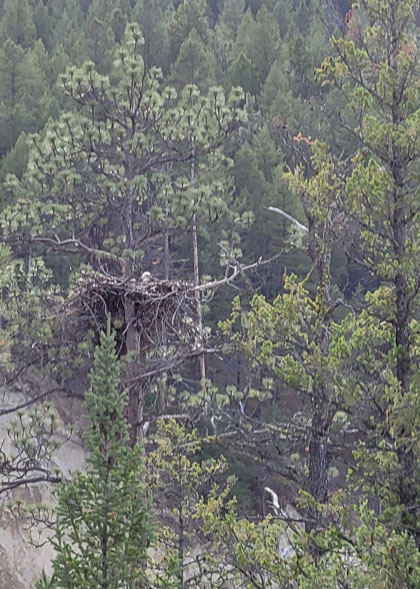 |
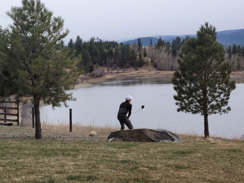 Dan & Tracie hosted the family for Easter dinner. I didn't take
many pictures, but I did |
| Sure enough, there were. It was cool to see them so close, but I couldn't get a good picture. | |
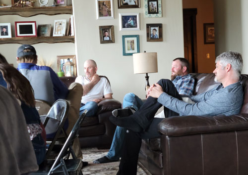 |
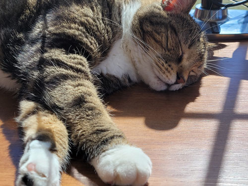 |
| Jeb, Dan, John Hurst, and Mark - trying to stay awake after a big meal. | She doesn't even attempt to stay awake if she finds a patch of sunshine. |
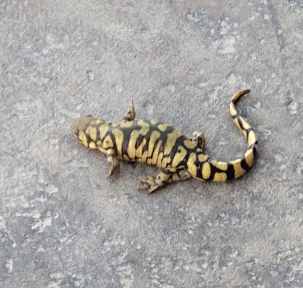 |
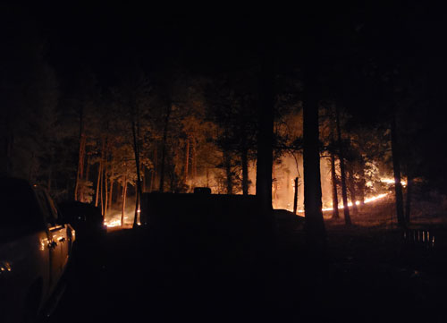 So Jeb has a tendency to start grass fires that later restart
themselves. This one restarted |
| One morning I opened the front door to find this cute
little salamander guy on the front porch. He was about 5" long. |
|
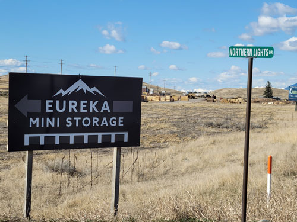 |
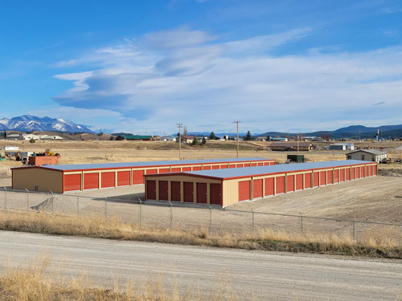 |
| Eureka Mini Storage on Northern Lights Drive | Grand opening was April 15th, it was full before the end of May. |
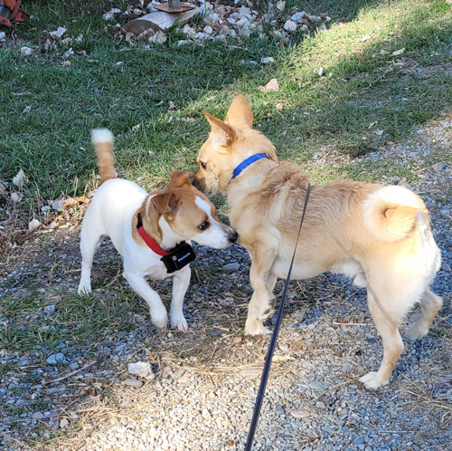 |
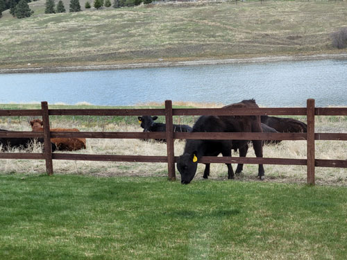 We got our new batch of steers, ready for 9 months of getting fat! |
| Buddy whines each time we drive by this dog in town, so one day
I stopped to let them meet. It turned out that Opie was too friendly for Buddy, he was ready to leave after about 10 minutes. |
|
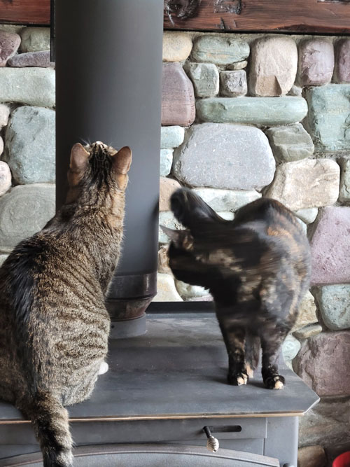 |
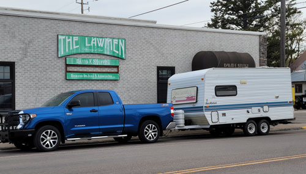 We finally did it! I've wanted a camper for ages and we finally got
one in April. It's just |
| The first time a bird came down the stove pipe it was
scary. The second time it happened, it was the biggest thrill of the week. No birds were harmed in the removal of them to the outdoors. |
|
| Amy ran for a 3-year seat on the school board and got the
most votes of any candidate. Hurray for Amy! She will do a fantastic job. |
Buddy acts like he's being punished when we offer him his
kibble. He wants to be fed meaty bones, bacon, and pepperoni meat sticks. Kibble is for cats. |